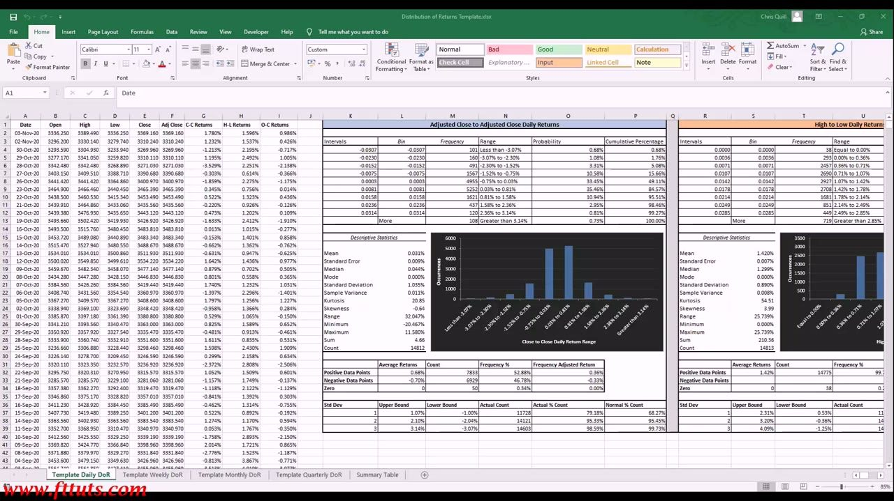
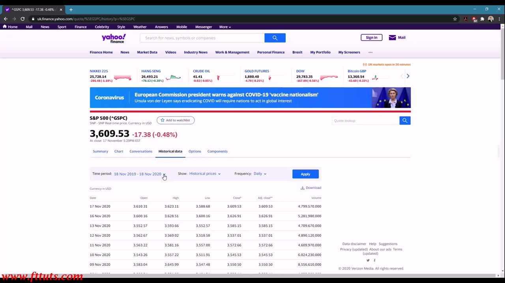
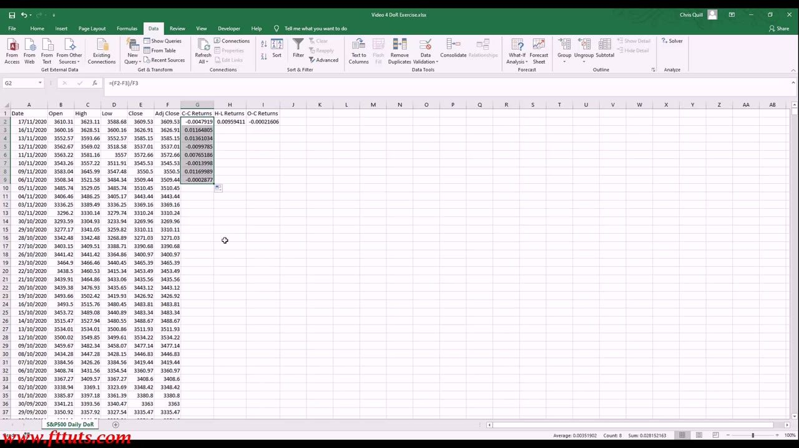
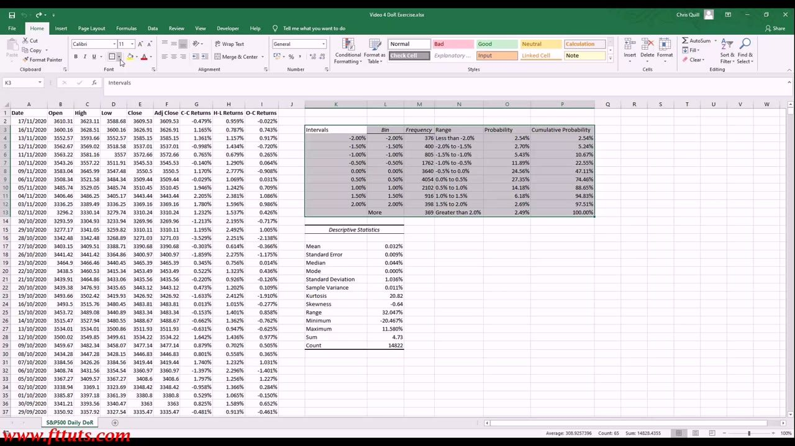
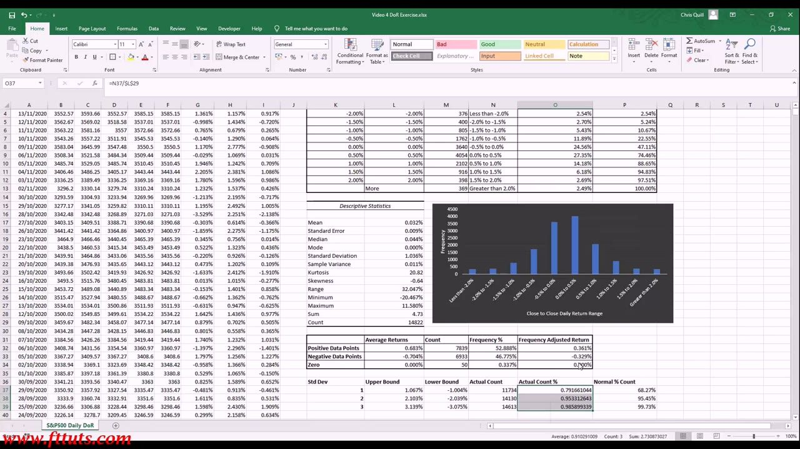
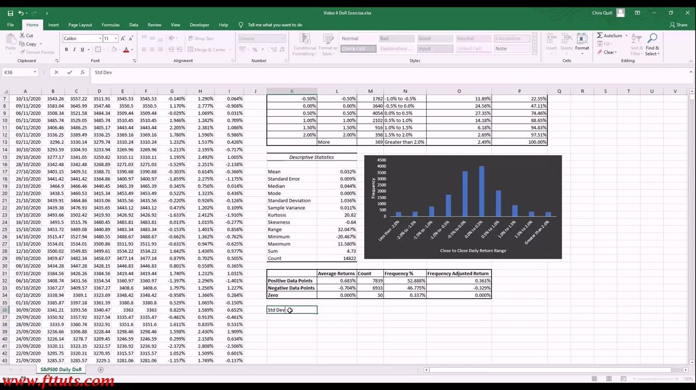
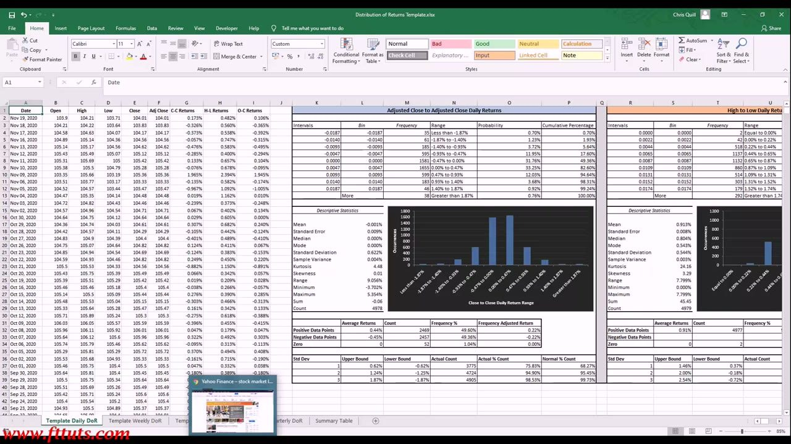
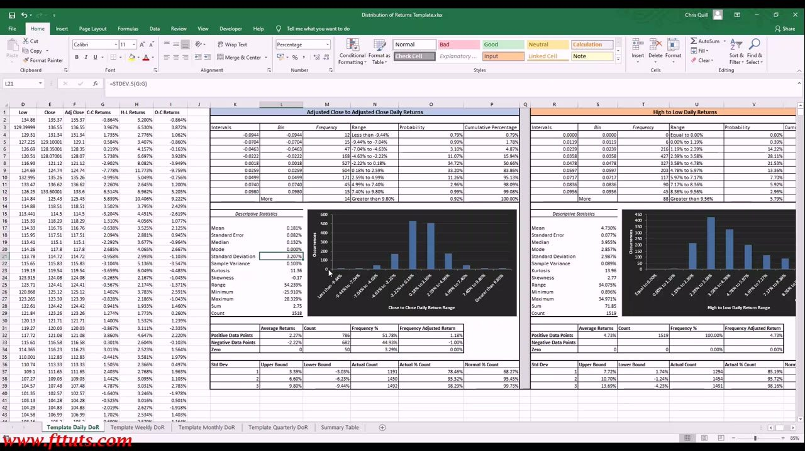
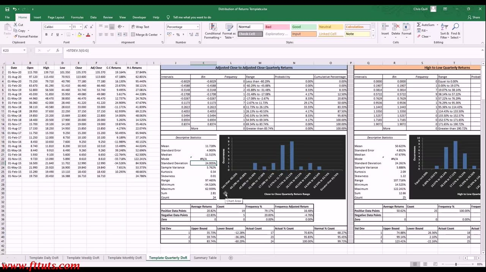
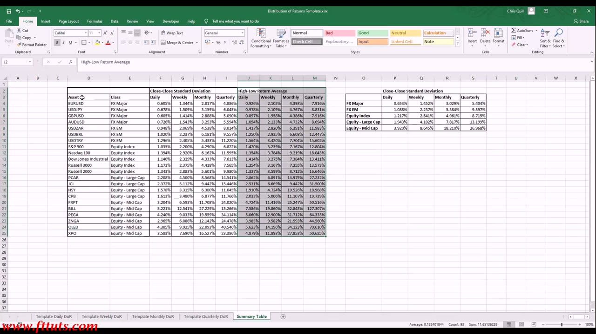

Realized Volatility 2
The spreadsheet class: build any instrument's Distribution of Returns from scratch, and watch volatility scale up with holding period and down the market-cap chain
A hands-on Excel build (Chris Quill) that turns raw price data into a Distribution of Returns — returns, histogram, descriptive stats, empirical-vs-Normal bands — so you can measure realized volatility yourself for any instrument, across daily/weekly/monthly/quarterly frequencies, forever.
The gist
- The whole point: a reusable, formula-driven Excel template so you can measure any instrument's realized volatility yourself and never depend on someone else's numbers.
- Method: download prices, compute Close-to-Close / High-to-Low / Open-to-Close returns, run Histogram + Descriptive Statistics, add Probability + Cumulative, then compare actual counts within +/-1/2/3 sigma against the Normal 68.27% / 95.45% / 99.73%.
- Data sources: Yahoo Finance for equities/indices (^GSPC S&P500, FRPT), investing.com for FX (USD/JPY). Always sanity-check extremes first: one bad FRPT -83.77% row blew Kurtosis to 438.
- Equities are peaky and fat-tailed: S&P500 daily C-C std ~1.036%, Kurtosis 20.85, Skew -0.64; ~79.17% of days fall within +/-1 sigma vs 68.27% Normal. Currencies are near-Normal: USD/JPY Kurtosis 4.48, Skew 0.01.
- Volatility term structure — same instrument, longer holding period, bigger typical move: FRPT (mid-cap) C-C std ~3.207% daily rises to ~24% quarterly.
- Volatility also rises down the market-cap chain: daily C-C std by class — FX Major 0.653% < FX EM 1.088% < Equity Index 1.217% < Large Cap 1.943% < Mid Cap 3.920% — and the ordering holds at every frequency.
The deliverable: a reusable Distribution-of-Returns template
- The finished analysis you are learning to build: raw S&P500 (^GSPC) daily price series on the left (Date, Open, High, Low, Close, Adj Close, and C-C / H-L / O-C Returns columns).
- Middle: an 'Adjusted Close to Adjusted Close Daily Returns' frequency table (Intervals / Bin / Frequency / Range / Probability / Cumulative) with a Descriptive Statistics block and a Close-to-Close histogram.
- Right: a 'High to Low Daily Returns' frequency table, its own Descriptive Statistics, and histogram.
- Bottom: a positive/negative/zero data-point summary and a Std-Dev upper/lower bound vs actual-count vs Normal-count comparison.
- Workbook tabs: Template Daily / Weekly / Monthly / Quarterly DoR, plus a Summary Table.
This is a build-along spreadsheet class. Once learned, the same template measures realized volatility for any instrument or asset class, at any sampling frequency, forever.

Step 1 — Get the price data
- Equities/indices: Yahoo Finance historical data — for the S&P 500 use ticker ^GSPC; set Frequency = Daily, pick the date range, Download the CSV (columns Date, Open, High, Low, Close, Adj Close, Volume).
- The S&P500 daily history runs all the way back to 30/12/1927 (~14,800+ daily observations).
- FX uses a different source — investing.com (see the USD/JPY section) — which only holds ~19 years of daily FX data and a different column layout.
- Open in Excel and sort oldest-to-newest before computing returns.
As long as you can get the data, you can measure any asset's volatility yourself — the source just changes by asset class.

Step 2 — Compute the returns
- Close-to-Close (C-C) return: =(F2-F3)/F3 — today's Adj Close minus prior day's, divided by prior day's = the daily % return; fill down the whole series.
- High-to-Low (H-L) return: =(High-Low)/Low = the day's full trading range as a %.
- Open-to-Close (O-C) return computed the same way — the three measures give different distribution shapes for the same instrument.
- The first/last row hits #DIV/0! because there is no prior day to divide by — the expected edge case at the start of the series.
These three return series are the raw input to the whole distribution analysis; C-C is the primary volatility measure, H-L captures intraday range.

Step 3 — Histogram, stats, probability & cumulative
- Bin returns into gates (e.g. -2.0% to +2.0% in 0.5% steps, plus 'More') via Data Analysis > Histogram (Input = the C-C returns column $G$2:$G$14823) to get the Frequency per gate.
- Data Analysis > Descriptive Statistics gives the summary: S&P500 daily C-C Mean 0.032%, Std Dev 1.036%, Kurtosis 20.82, Skewness -0.64, Range 32.047%, Min -20.467%, Max 11.580%, Count 14822.
- Add a Probability column (each gate's Frequency / total Count) and a Cumulative Probability column (running sum, reaching 100%).
- Per-gate probabilities: 2.54%, 2.70%, 5.43%, 11.89%, 24.56%, 27.35%, 14.18%, 6.18%, 2.69%, 2.49% — the heaviest clustering sits in the +/-0.5% gates around zero.
This turns a raw return series into a probability distribution: hard odds of a move landing in any given gate, computed live from Excel statistical functions (e.g. =AVERAGE, =VAR.S, =STDEV.S).

Step 4 — Empirical vs Normal: the fat central peak
- Build +/-1/2/3 standard-deviation bounds as mean +/- n*sigma: 1 sigma 1.067% / -1.004%, 2 sigma 2.103% / -2.039%, 3 sigma 3.139% / -3.075%.
- Use COUNTIFS to count how many actual days fall inside each band, then Actual Count % = count / total.
- S&P500 result: 79.17% of days within +/-1 sigma (11734 days), 95.33% within +/-2 sigma (14130), 98.59% within +/-3 sigma (14613).
- Compare to the Normal distribution's 68.27% / 95.45% / 99.73%.
- ~79% inside 1 sigma versus 68.27% Normal is the peaky excess kurtosis made concrete — far more days cluster near the mean, with thin fat tails just outside, than a bell curve predicts.
This is where non-Normality becomes numeric: equity returns are peakier than Normal at the centre (positive kurtosis) and negatively skewed, so the naive '68% within 1 sigma' rule understates tail behaviour.

Positive vs negative days
- Using AVERAGEIF on a >0 / <0 criterion, split the S&P500 daily C-C returns into up-days, down-days and zero-days.
- Positive: Average 0.683%, Count 7839, Frequency 52.888%.
- Negative: Average -0.704%, Count 6933, Frequency 46.775%.
- Zero: 0.000%, Count 50, Frequency 0.337%.
Up-days are slightly more frequent, but down-days are slightly larger on average — the small asymmetry behind the negative skew.

Applying it to a currency: USD/JPY (near-Normal)
- FX data comes from investing.com (Price / Change % layout, not Yahoo's OHLC/Adj Close) — USD/JPY, ~19 years of daily history (19/10/2001 - 19/11/2020), ~4,978 observations.
- USD/JPY C-C Descriptive Statistics: Mean -0.001%, Std Dev 0.606%, Kurtosis 4.48, Skewness 0.01, Range 9.056%, Min -3.702%, Max 5.354%. High-to-Low block Kurtosis 24.16, Skew 3.29.
- Actual count within +/-1 sigma 75.83% vs Normal 68.27%.
- Contrast with the S&P500 (Kurtosis 20.85): the currency's ~4.5 kurtosis and ~0 skew confirm FX distributions are far closer to Normal than equities.
The same template works on any instrument — you just map its columns (FX files differ from equity files) and paste the prices in.

Applying it to a mid-cap single stock: FRPT
- FRPT (Freshpet) daily from Yahoo Finance, ~1,518 observations after cleaning (history only spans ~2014 onward — near its IPO).
- FRPT C-C: Mean 0.181%, Std Dev 3.207%, Kurtosis 11.36, Skewness -0.17, Range 54.239%. High-to-Low block Kurtosis 13.96, Skew 2.77. Actual within +/-1 sigma 78.46%.
- ~3.2% daily standard deviation is roughly 3x the S&P500's ~1.0% — the far higher realized volatility of a single mid-cap stock vs the index.
- Data-quality warning: before cleaning, one bad/unadjusted -83.77% single-day row blew the stats to Kurtosis 438.26, Skew -11.11, Range 112% — always sanity-check extremes and trim trailing empty rows before trusting a distribution.
This ranks opportunity/risk across asset classes: a single mid-cap carries far more realized volatility than the index it sits in.

Volatility term structure: the same stock across frequencies
- Repeat the whole build at weekly, monthly and quarterly sampling (Yahoo lets you set Frequency = Monthly, etc.) to see how volatility scales with the holding period.
- FRPT Close-to-Close standard deviation: ~3.207% daily -> ~6.593% weekly -> ~11.708% monthly -> ~24.020% quarterly.
- Same instrument, longer period, bigger typical move — the volatility term structure, measured empirically at each frequency rather than assumed.
- The quarterly ~24% std dwarfs the daily ~3.2% — how much the opportunity/risk in one name grows as you extend the holding period.
This is the quantitative basis for choosing a time horizon: extending from daily to a 1-3 month hold is where the volatility (and therefore the tradeable opportunity) becomes large enough to work with.

The master picture: the Summary Table
- Pull every instrument's Close-Close Standard Deviation and High-Low Return Average into one table, each across Daily / Weekly / Monthly / Quarterly.
- Instruments span FX Major (EURUSD, USDJPY, GBPUSD, AUDUSD), FX EM (USDZAR, USDBRL, USDTRY), Equity Index (S&P500, Nasdaq100, Dow Jones, Russell 3000, Russell 2000), Equity Large Cap (PCAR, JCI, HSY, CPB), Equity Mid Cap (FRPT, BILL, PEGA, ZNGA, OLED, XPO).
- Roll up to class averages with =AVERAGEIF keyed on the Class column. By-class daily / weekly / monthly / quarterly C-C std: FX Major 0.653 / 1.452 / 3.029 / 5.404%; FX EM 1.088 / 2.237 / 5.384 / 9.597%; Equity Index 1.217 / 2.541 / 4.961 / 8.715%; Equity Large Cap 1.943 / 4.102 / 7.817 / 13.199%; Equity Mid Cap 3.920 / 8.645 / 18.210 / 26.968%.
- Two axes of volatility fall out at once: it rises down the market-cap / asset-class chain (FX Major lowest, Mid Cap highest) AND rises with the holding period across every column.
This is the deliverable of the class — a reusable, from-scratch realized-volatility comparison across asset classes and holding periods. Smaller companies are more volatile because they have less established, more volatile revenue streams; equities as a class are more volatile than currencies and bonds.

Glossary
- Distribution of Returns (DoR)The frequency distribution of an instrument's historical returns bucketed into gates — the core tool for measuring realized volatility and the odds of any given move.
- Close-to-Close (C-C) return=(Adj Close today - Adj Close prior)/Adj Close prior; the primary daily % return series and the main volatility input.
- High-to-Low (H-L) return=(High - Low)/Low; the day's full trading range as a %, giving a different (typically more fat-tailed) distribution shape.
- Standard Deviation (sigma)The typical size of a period's return around the mean (=STDEV.S(returns)); the single-number volatility measure. S&P500 daily C-C ~1.036%.
- KurtosisHow peaky / fat-tailed a distribution is. Equities are high (S&P500 20.85, FRPT 11.36); currencies near-Normal (USD/JPY 4.48). A Normal distribution has kurtosis 3.
- SkewnessDirectional tail bias. Equity C-C returns are slightly negatively skewed (S&P500 -0.64); USD/JPY ~0.
- Empirical vs Normal (+/-1/2/3 sigma)Counting actual days within each sigma band (S&P500 79.17% / 95.33% / 98.59%) vs the Normal 68.27% / 95.45% / 99.73% — the fat central peak of positive kurtosis made numeric.
- Volatility term structureThe same instrument's volatility grows with the holding period: FRPT C-C std ~3.207% daily -> ~24.020% quarterly, measured empirically at each frequency.